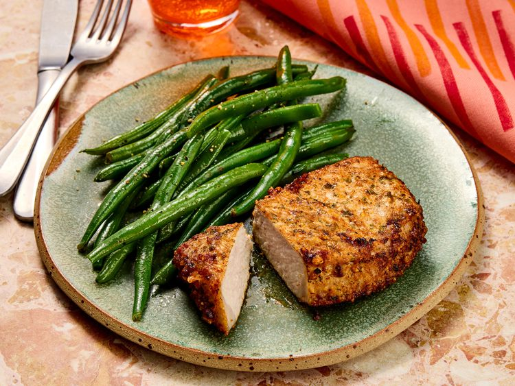

Pork Chops

Pork chops are the most popular cut of pork. They come from the loin which is the meat that runs from the pig’s hip to its shoulder.
While there are a variety of names for pork chops like loin, rib, sirloin, top loin, and blade chops, it’s important to remember that they all cook the same.
The length of cooking primarily depends on the thickness of the chop. Some prefer thin cut chops, but others prefer the juiciness of a thick-cut chop on the bone. Thickness can vary from ½ to 2 inches.
Ingredients
- 1 cup grated Parmesan cheese
- 2 teaspoons of paprika
- 2 teaspoons of garlic powder
- 2 teaspoons of kosher salt
- 2 teaspoons of dried parsley
- 1 teaspoon of ground black pepper
- 8 (5-ounce) boneless pork chops
- 4 tablespoons extra virgin olive oil
Steps
- Gather the ingredients. Preheat the air fryer to 380 degrees F (190 degrees C).
- Combine Parmesan cheese, paprika, garlic powder, salt, parsley, and pepper in a flat shallow dish; mix well.
- Coat each pork chop with olive oil. Dredge both sides of each chop in the Parmesan mixture and set on a plate.
- Place 2 chops in the basket of the air fryer and cook for 10 minutes; flipping halfway through cook time. Transfer to a cutting board and let rest for 5 minutes. Repeat with remaining chops.
- Served hot and enjoy!
Home